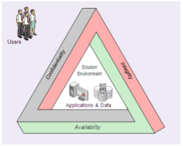
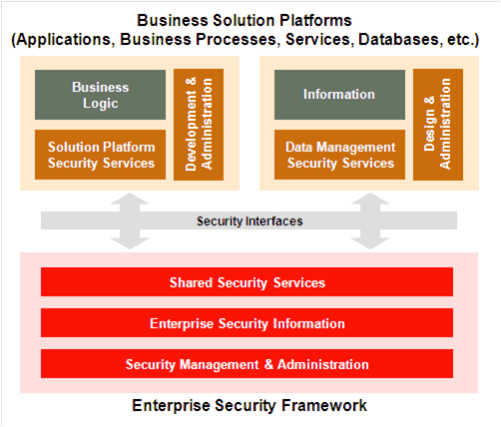
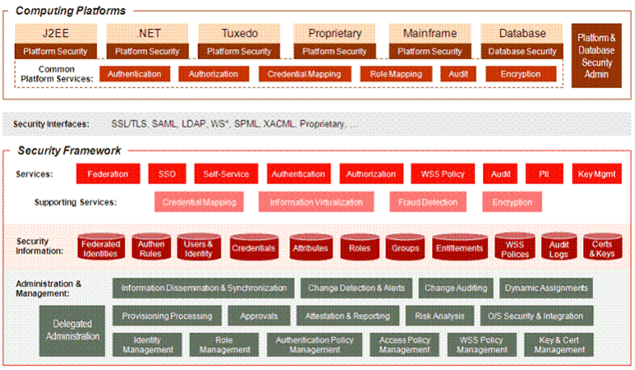

OUM |
Enterprise Security Supplemental Guide |
||
Method Navigation |
Current Page Navigation |
||
|
|
||||||||
As organizations evolve their IT architectures, embracing new technologies and computing strategies, they must be diligent in their efforts to ensure security. As Internet commerce web-based computing and now cloud computing emerges, new types of attacks and threats emerge as well. Along with this came government regulations around protecting personal information, payment data, financial records, archives, audit data, etc. To keep up, an enterprise-level security architecture must be versatile and expandable. It must be able to grow and evolve with the organization, support new business initiatives and technology strategies, and handle the types of threats that may emerge. The architecture must be able to accommodate many different types of information, applications, and users.
Enterprise Security is a strategic approach that should be based on a solid, holistic framework encompassing all of an organization's Information Security requirements, not just those of individual projects. The framework should be based on a reference architecture that takes into account key security principles, such as, 'Defense in Depth' and 'Least Privileges'. By taking this approach to Information Security, organizations can ensure that the components of their Information Security Architecture address all business critical Information and are driven by the requirements of the business.
As organizations grow and tend to move from a modular, loosely-coupled, point solution based architecture to a more standards based, comprehensive strategic infrastructure, they tend to adopt processes and follow common principles of information security that reshape and redefine the way organizations manage security. Enterprise Security should follow the principle tenets of information security: confidentiality, integrity, and availability (CIA).
CONFIDENTIALITY – Prevent disclosure of information to unauthorized individuals or systems.
INTEGRITY – When data cannot be modified undetectably.
AVAILABILITY – For any information system to serve its purpose, the information must be available when it is needed.

The intersection between users, applications and data is a fundamental concept in security architecture. It involves classification of users and resources in order to properly grant access rights, which in turn help provide confidentiality and integrity. Organizations are advised to examine, and continually re-examine their security goals and architecture. They must define security policies and mechanisms to ensure that sensitive resources are only made available to the right people, and that the organization can determine, at any time, "who has access to what."
The key concepts of Confidentiality, Integrity and Availability should be applicable for key components that constitute the organization infrastructure: application, data and users. There are security strategies associated with each of these infrastructure components and adopting those allows an organization to grow and evolve, support new business initiatives and technology strategies, and handle the types of threats that may emerge.
Security in an organization should be pervasive in nature, and it should touch every organization process and domain. If security is a part of an organization’s daily business operations, it leads to smart behavior on the part of the organization and provides increased awareness of the threats and risks. Looking at the enterprise from an Information Security perspective, the key focus is to protect the most important piece of the organization: information. The following security principles are based on Oracle expertise and align with the industry best practices that enterprise’s use to define the Information Security Architecture:
Oracle security is based on the above security principles and utilizes the security domains defined by the International Information Systems Security Certification Consortium (ISC)2™. These security domains apply to the critical information assets of organization: application, data, and users. Based on the (ISC)2 standards, the following security realms applicable are:
A security framework that meets the above mentioned security architecture principles defines a security environment to be comprised of basically two parts.

The security framework is based on infrastructure components that provide a collection of security services across the enterprise. The framework provides integration with the solution platforms via a set of interfaces that are primarily based on open standards. Proprietary interfaces can also be used to support specific solution platforms when necessary. The framework includes a master version of all security-related information, and provides administrative capabilities to manage the enterprise security services and information.

The common services that are provided by any security platform:
| Service | Description |
|---|---|
Federation |
This service offers a way to propagate identity across security and cookie domains. It involves the mapping of identities and credentials from the current domain to what is required by the remote domain. |
Single Sign On (SSO) |
This service provides a form of proof that computing platforms will recognize and honor as evidence of authentication. Proof may be in the form of a token, cookie, or assertion, depending on the SSO implementation used. The SSO service maybe combined with the authentication service such that SSO proof is automatically provided upon successful authentication. |
Self-Service |
This service provides a means for end users to self-register and maintain their own security information for which they have access rights. Common maintenance functions include password resets, address changes, and contact number changes. This service may interact with administrative processes where approvals are needed and synchronization across information stores must be orchestrated. |
Authentication |
Authentication is the process of validating an asserted claim to an identity. Before a decision can be made to see if a user should be allowed to access Information it is a pre-requisite to need to know who that user is. Whilst a user can provide their identification, it is of no use until it has been suitably assured. This is done through the process of authentication. |
Authorization |
The authorization service represents a standard approach to all forms of access control. It leverages the identity, group, role, and entitlement policy information in order to make access decisions. It represents the policy decision, retrieval, information, and administration points. Authorization includes coarse- and fine-grained access control. Most platforms provide greater built-in support for coarse-grained access control since fine-grained control requires greater infrastructure capabilities. |
WSS Policy |
Provides a means to access WSS Policies for Web Services and validate and enforce policy requirements on service requests. |
Audit |
The audit service offers a standard means to collect audit data from various sources such as computing platforms, infrastructure, and security framework components. It also offers a means to view and report on audit data collected. |
Personally Identifiable Information (PII) |
The PII service provides access to personal information governed by privacy rules. It can be used by business solutions in order to process transactions and execute business processes, or it can be used by security services in order to evaluate access control decisions. |
Key Management |
It provides the ability to register and resolve public keys that are used for encryption. It supports the maintenance of PKI at the organization or domain level. |
In addition, the security framework provides the following supporting services:
| Supporting Service | Description |
|---|---|
Credential Mapping |
This service supports other services that provide identity federation by supplying the type of credential needed for a particular resource. Primarily used for Federated services, Credential Mapping allows to transmit information across disparate domains to support information propagation. |
Information Virtualization |
As security information such as identities, credentials, attributes, etc. may be persisted in a number of physical stores, and each store may include some amount of unique data, this service provides a virtual view, or aggregation, of all data pertaining to a specific entity. The virtualization service can be used by other services that perform authentication and authorization in order to execute against a complete data set. |
Fraud Detection |
This service operates behind the scenes monitoring other services with the intent of detecting possible fraudulent activity. It is mostly associated with the authentication service and identifies if unauthorized access is attempted. It can monitor events such as failed logins and various inconsistent behavior as it occurs. It can send alerts and suspend accounts and sessions when suspicious activity is detected. |
Encryption |
As a supporting service, encryption capabilities are often built into the infrastructure that provides other forms of services. Encryption can also be offered as a primary service for organizations that want the ability to encrypt data from end-to-end using a single message-level encryption and decryption service. |

Copyright © 2006, 2016, Oracle and/or its affiliates. All rights reserved.